Getting Started¶
Welcome to Binary Ninja Sidekick. This document will get you up and running and show you the main features of the Sidekick plugin. For more detailed information, check out the User's Guide.
Purchase a Sidekick Plan¶
Most features of the Sidekick plugin are powered by the Sidekick service, which requires an active plan to access. Click here to purchase a plan that best fits your needs.
Note
When purchasing a plan, you will need to sign in to your Sidekick account. If you do not have a Sidekick account, you will be prompted to create one, or you can create one here.
Sidekick Plugin Installation¶
The installation process is straightforward and takes only a few minutes. You can install the Sidekick plugin using the Plugin Manager.
Note
The plugin has been well tested using the version of Python packaged with Binary Ninja, which is currently Python 3.10. By default, Binary Ninja will install the plugin using this version of Python, except for Linux users, which defaults to the latest version available on the system. For Linux users, we recommend configuring Binary Ninja to use Python 3.10. If you decide to configure Binary Ninja to use a separate Python virtual environment, see Setting Up a Virtual Environment.
Installing the Plugin¶
Installing the Sidekick plugin is easy. Launch the Plugin Manager by selecting Plugins -> Manage Plugins from the main menu. From the Plugin Manager search for "Sidekick" and locate the Sidekick plugin. Then click the Install button.
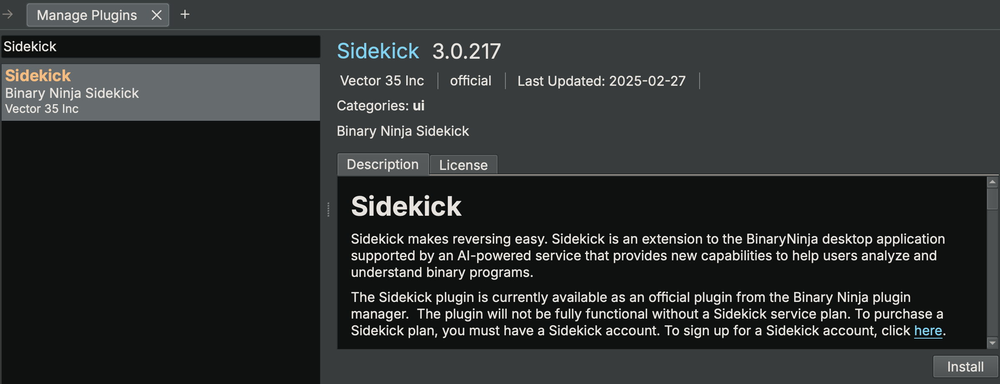
Note
The Sidekick plugin has several package dependencies that may take a few minutes to install. Restart Binary Ninja after installation of the plugin is complete.
Updating the Plugin¶
Binary Ninja 4.2.5814 and Later¶
If an update for the installed Sidekick plugin is available, then choose one of the following methods for updating the Sidekick plugin:
- Plugin Manager: Launch the Plugin Manager by selecting
Plugins -> Manage Pluginsfrom the main menu. From the Plugin Manager search for "Sidekick" and locate the Sidekick plugin. If an update is available, then click theUpdatebutton.
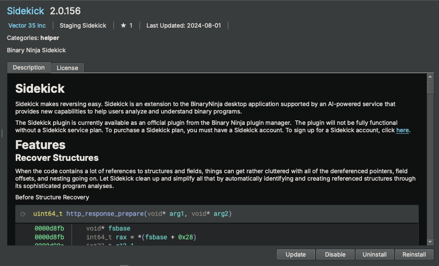
- Automatic Notification: On plugin startup, Sidekick automatically checks for updates. If one is available, then Sidekick asks you if you want to install it. Click
Yes. Once the update is complete, then you will need to restart Binary Ninja.
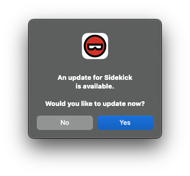
Before Binary Ninja 4.2.5814¶
If an update is available, then complete the following steps to update the plugin:
- Launch the Plugin Manager
- Locate the Sidekick plugin
- Click
Uninstall - Restart Binary Ninja
- Launch the Plugin Manager
- Locate the Sidekick plugin
- Click
Install
Configuring the Plugin¶
Set the API Key¶
To set your Sidekick API Key:
- Open the Settings tab within Binary Ninja from the
Binary Ninja -> Preferences->Settingsmenu - Search for
sidekick.api_key - Copy one of your API keys from your Sidekick account to the
Sidekick API Keysetting
Note
You can find the API keys in your Sidekick account here
Alternatively, the first time you launch the Sidekick plugin, you will be prompted to enter your Sidekick API key. If you provide an API key at this point, then it will get saved to your Settings.
Quick Start¶
Connecting to the Sidekick Service¶
The plugin will connect to the Sidekick service using the API key value in the sidekick.api_key setting. If an API key is not provided, then you will not be able to access the Sidekick service.
Note
All Sidekick features that do not rely on access to the Sidekick service are available to use for free. Refer here for more information on which features require access to the Sidekick service.
Sidekick Service Connection¶
You can configure the Sidekick plugin to connect to/disconnect from the Sidekick service. To switch the Sidekick plugin between the connected (online) and disconnected (offline) status, click the Sidekick status in the status bar at the bottom of the Binary Ninja window and select Connect/Disconnect.
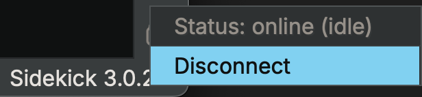
Basic Usage¶
Analysis Console¶
The Analysis Console sidebar provides a chat interface to interact with the Sidekick Analysis Assistant for a given scope of functions. These conversations are stored for easy reference.
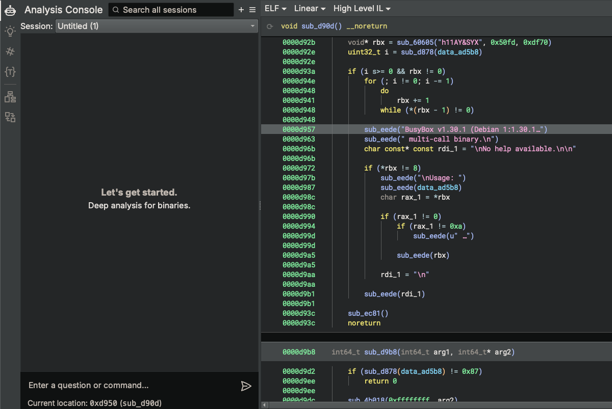
Ask a question about the current function
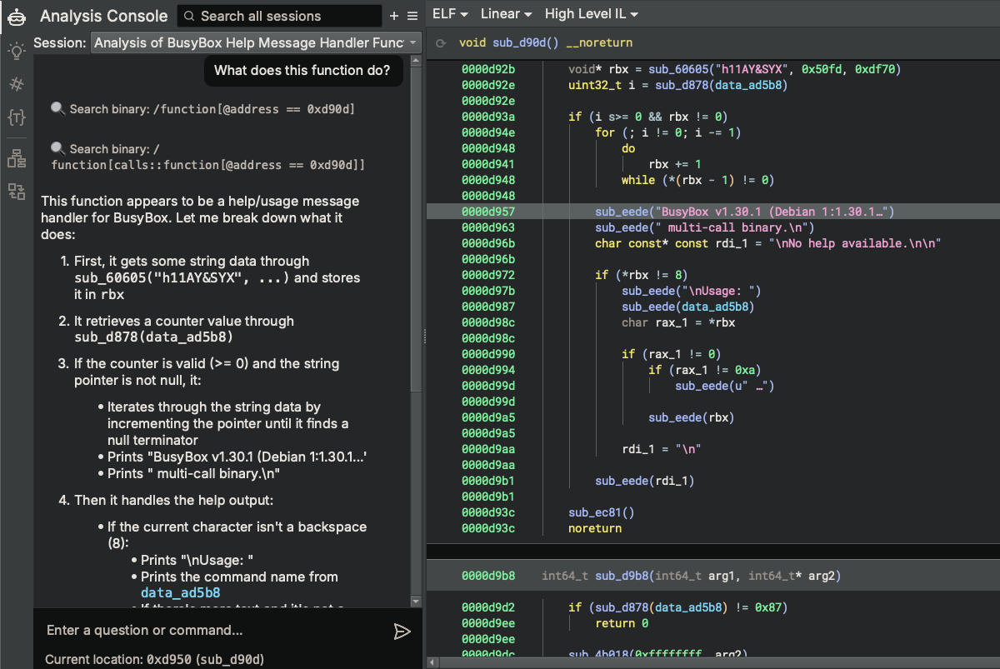
Navigate to another function and ask a question about that function
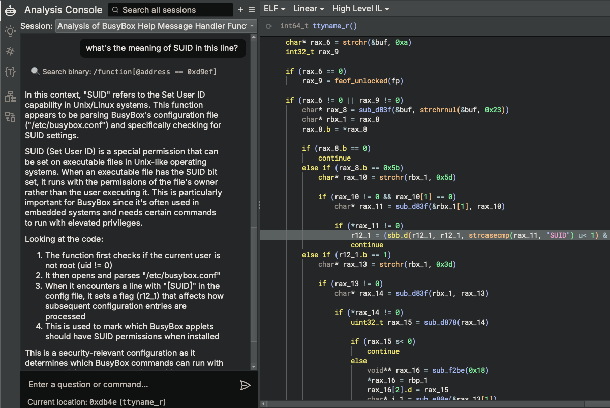
Analysis Indexes¶
The Analysis Indexes sidebar manages collections of items generated through analysis of the binary. Each collection (referred to as an "index") contains a table of items in the binary (e.g. functions, instructions, strings, etc.). By default, when opening a binary for the first time, the Analyisis Indexes sidebar does not contain any indexes. However, you can create new indexes, add entries to them, and view the entries in the table.
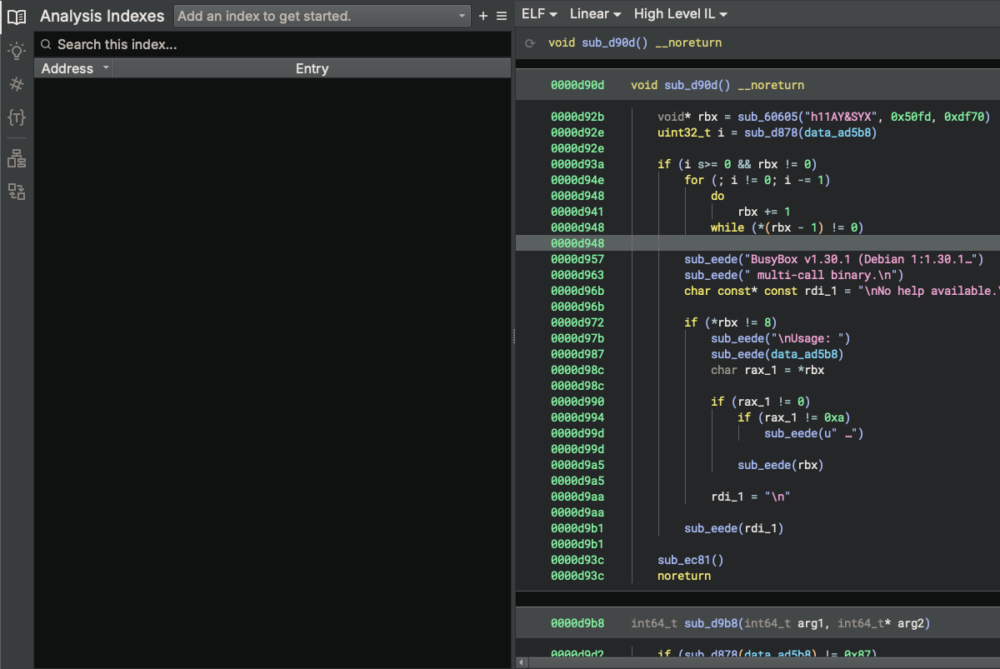
Try adding an index by running one of the example scripts from the Automation Workbench (e.g. High-Level Functions). To do this, open the Automation Workbench Sidebar, enter "High" in the search box, select the "High-Level Functions" script, and click Run. Once the script completes, open the Analyisis Indexes sidebar, select "High-Level Functions" from the indexes drop-down combobox, and view the entries in the table.
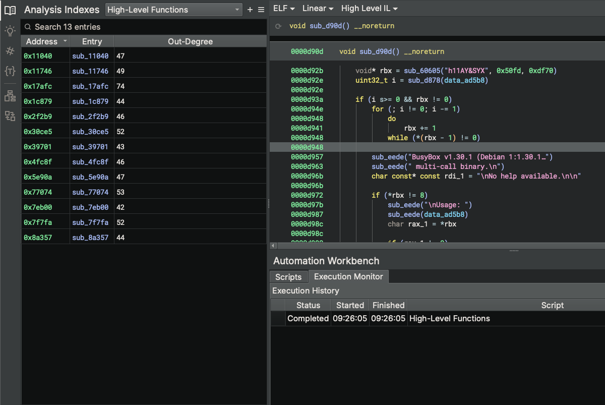
Note
Sidekick legacy indexer scripts (from Sidekick 1.x) can been converted to scripts in the Automation Workbench. Any legacy indexer scripts stored in a user's Binary Ninja Database (BNDB) or User Directory can be converted by selecting the appropriate Import Indexer Scripts action from the Sidekick Plugin main menu.
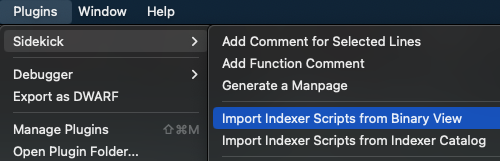
Code Insight Map¶
The Code Insight Map is a Binary Ninja view that enables you to visualize the calling relationships between items in Analysis Indexes using a customizable call-oriented graph. This view allows you to quickly obtain a top-level understanding of program behaviors by visualizing the calling relationships between functions and their focused content.
Select the Code Insight Map view from the View drop-down menu
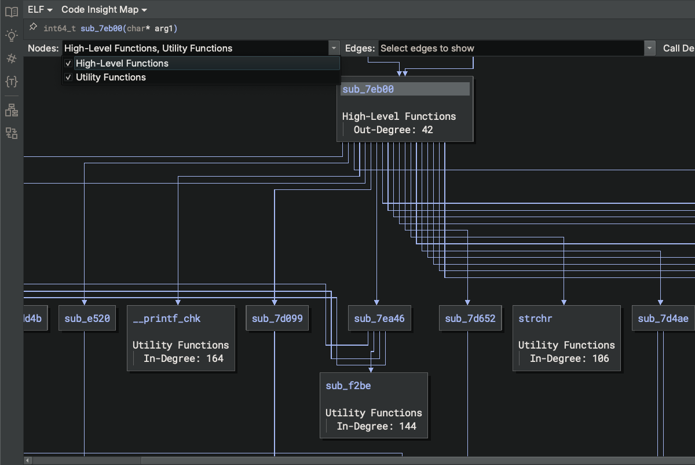
Enable/disable displayed topics
Adjust Call Depth sliders to expand/collapse the call graph context of the given function
Automation Workbench¶
The Automation Workbench sidebar provides an interface for creating, modifying, and running scripts that blend both the capabilities of Python code and large language models (LLMs) to automate repeated tasks.
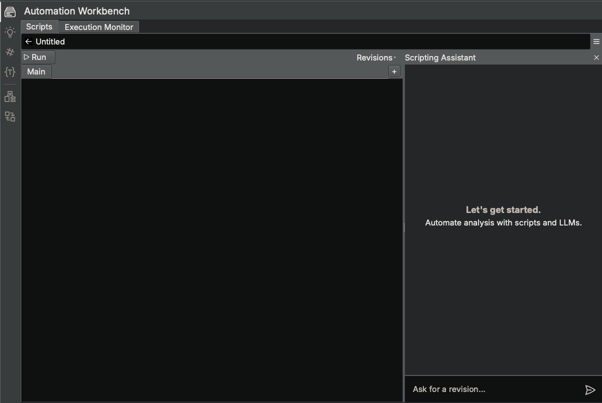
Try running the existing example script named "High-Level Functions". Search for it in the Scripts tab when in Search Mode and click Run. This particular script outputs results to an Index named "High-Level Functions", which can be viewed in the Analyisis Indexes sidebar.
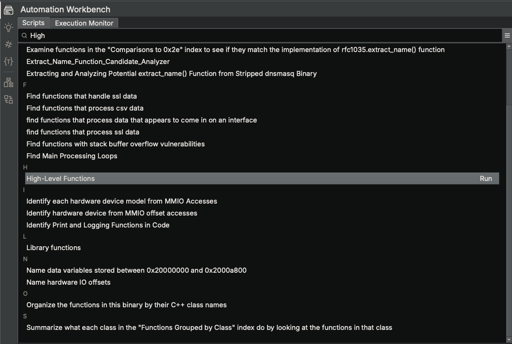
Try describing a new automation task and pressing Enter, which will open a new script editor. Sidekick will generate an initial version of the script based on your analysis task description and open the Scripting Assistant that works with you to refine your script.
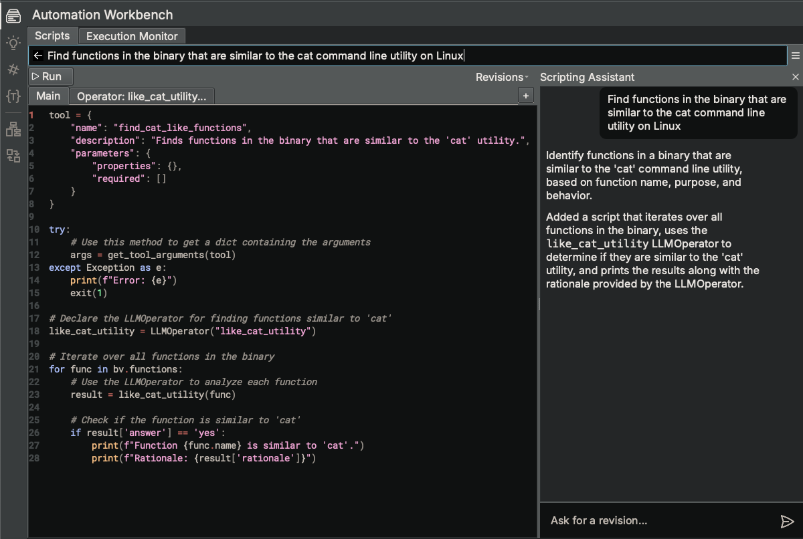
(Note: In this example, the script uses the LLMOperator class to perform a given task using an LLM based on an initial prompt and an input Binary Ninja object (e.g. Function).)
Once you are satisfied with the script, try running it by clicking Run.
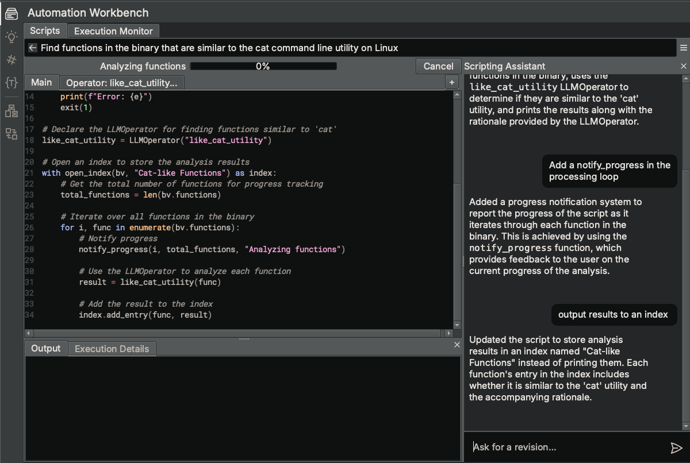
Provide us with feedback on how things went by selecting Submit Feedback... from the hamburger menu.
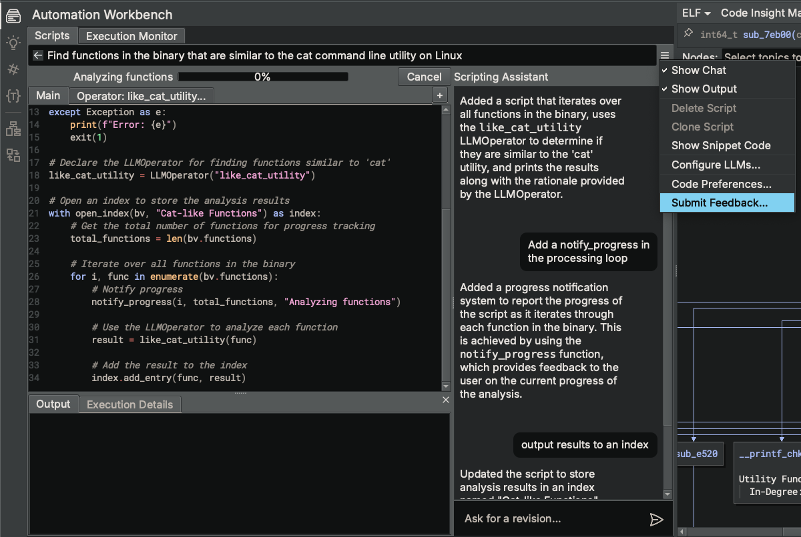
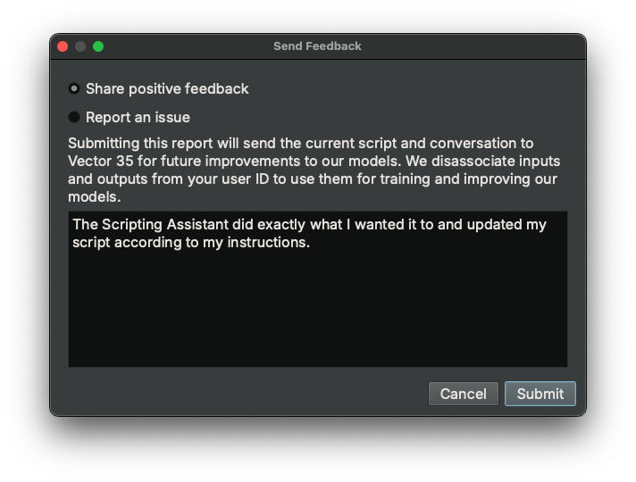
Note
Feedback is only collected for non-commercial plans or commercial-plan users that have opted-in for data collection.
Decompilation Suggestions¶
Use the Decompilation Suggestions sidebar to get suggestions for improving the clarity of the current function.
Request Sidekick to make suggestions for you, or choose specific suggestions types yourself
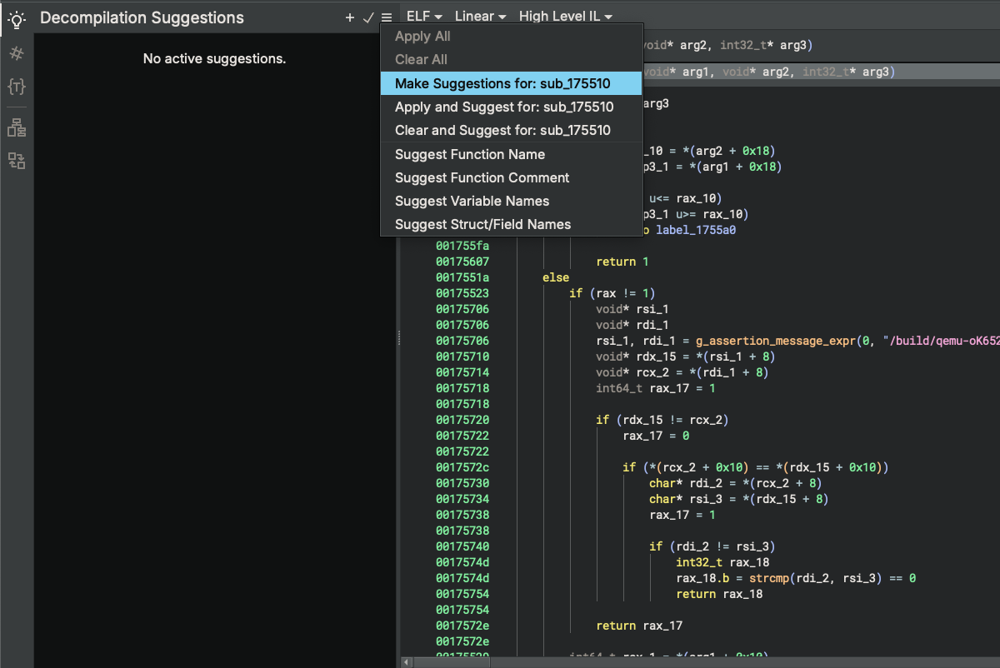
Review suggestions and accept the ones you want to apply
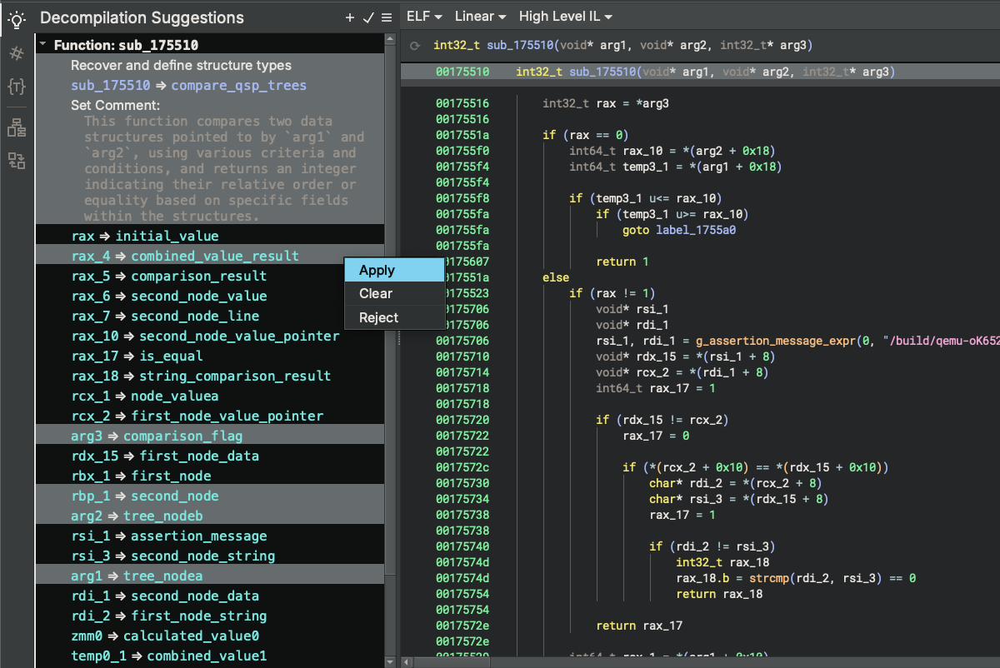